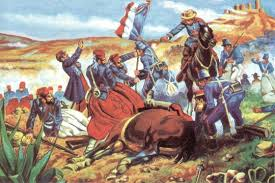
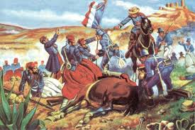

Subtema 2 1
5 de Mayo
El Cinco de Mayo fecha de la conmemoración de la Batalla de Puebla. Marca la primera vez que el Ejército mexicano pudo derrotar a una potencia extranjera mejor preparada, en este caso los franceses. La batalla tuvo lugar en la actual ciudad de Puebla de Zaragoza el 5 de mayo de 1862, entre los ejércitos de México y Francia.
Marco histórico
En Inglaterra y España lograron negociar por la vía diplomática, los términos y condiciones en los que se pagaría la deuda posteriormente. Napoleón III, gobernante de Francia, decidió invadir México para establecer una monarquía favorable a Europa.Con ese fin, debía disolver el Gobierno mexicano. En abril de 1862 los franceses desembarcaron en Veracruz, y emprendieron la campaña militar hacia el centro de la República. La primera batalla importante tuvo lugar en Acultzingo, en el límite de los Estados de Veracruz y Puebla.
El héroe de la batalla de Puebla fue el general Ignacio Zaragoza. El informe que el general Zaragoza rindió sobre la Batalla de Puebla al Presidente Benito Juárez fue breve y significativo: "Las armas nacionales se han cubierto de gloria. Las tropas francesas se portaron con valor en el combate y su jefe con torpeza."
La victoria de México no duró mucho tiempo. Un año después treinta mil tropas francesas lograron derrotar al Ejército Mexicano, de esa forma Francia logró tomar control de México y establecer a Maximiliano como emperador autoritario de México aunque con muy buenas intenciones y de noble corazón, el emperador no sostuvo por mucho su imperio.
Pero la victoria de Francia tampoco duro mucho, solo 3 años.
Debido a la conflictiva situación en Europa, Napoleón III retiró el apoyo militar y económico a Maximiliano, al mismo tiempo los republicanos mexicanos comenzaron a recibir respaldo financiero y diplomático estadounidense al concluir en aquel país la Guerra de Secesión.
Al mismo tiempo el novel imperio comenzó a perder su endeble base social. Así las cosas, durante 1866 los republicanos fueron ganando importantes posiciones hasta dejar reducida el área de influencia imperial a Puebla y Veracruz. El 2 de abril del año siguiente, tropas encabezadas por el juarista Porfirio Díaz tomaron la ciudad de Puebla con lo que militarmente el imperio fue aniquilado. El emperador Maximiliano, para entonces sitiado en Querétaro, fue hecho prisionero y finalmente fusilado, en los últimos instantes demostró su gallardía y su noble corazón a mediados de ese año en un lugar llamado "El Cerro de las Campanas"
 
